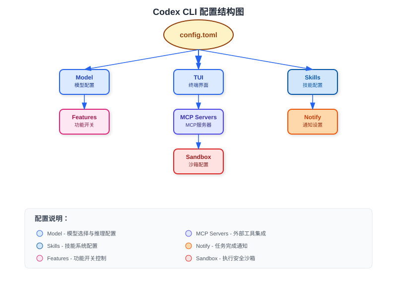

Codex CLI 設定
Codex CLI は設定ファイルによってカスタマイズできます。このセクションでは、設定ファイルの構造、各種設定オプション、およびニーズに合わせた調整方法について説明します。
設定ファイルの場所
Codex の設定ファイルは、ユーザーのホームディレクトリ配下の~/.codex/config.toml：
~/.codex/config.toml
ファイルが存在しない場合は、手動で作成する必要があります。Codex は初回起動時にデフォルトの設定ファイルを作成します。
設定を変更した後、Codex を再起動すると変更が反映されます。
設定ファイルの構造
完全な設定ファイルには、次のセクションが含まれる場合があります：

完全な設定例
# 基本設定
[model]
default = "o4-mini" # デフォルトで使用するモデル
# TUI 設定
[tui]
alternate_screen = "auto" # 代替スクリーンモード：auto/always/never
# スキル設定
[skills]
enabled = true
# 機能フラグ
[features]
js_repl = false # JavaScript REPL を有効にするかどうか
# MCP サーバー設定
[mcp_servers]
# 通知設定
[notify]
enabled = false
モデル設定
Codex は複数のモデルをサポートしており、タスクのニーズに応じて選択できます：
| 設定項目 | 型 | 説明 |
|---|---|---|
model.default | string | デフォルトで使用するモデル |
model.reasoning_effort | string | 推論強度：low/medium/high |
利用可能なモデル
Codex CLI で利用可能なモデルは次のとおりです：
o4-mini- 高速かつ効率的で、簡単なタスクに適していますo4-mini-high- o4-mini の高推論バージョンo3- 強力な推論能力o3-pro- o3 のプロフェッショナルバージョン
モデルによって速度と価格が異なります。適切なモデルを選択することで、使用体験とコストを最適化できます。
TUI 設定
ターミナルユーザーインターフェースの関連設定：
| 設定項目 | 型 | 説明 | デフォルト値 |
|---|---|---|---|
tui.alternate_screen | string | 代替スクリーンモード：auto/always/never | auto |
tui.width | number | ターミナルの幅 | 0（自動） |
tui.height | number | ターミナルの高さ | 0（自動） |
代替スクリーンモードの説明
auto- 自動検出。Zellij などのターミナルマルチプレクサでは自動的に無効化always- 常に代替スクリーンを使用（デフォルトの体験）never- 代替スクリーンを使用しない（スクロール履歴を保持）
実行時の上書き
実行時にコマンドライン引数でこれらの設定を上書きできます：
コマンドラインによる設定の上書き
codex --no-alt-screen
スキル設定
スキル（Skills）は Codex の拡張メカニズムであり、ワークフローをカスタマイズできます：
| 設定項目 | 型 | 説明 |
|---|---|---|
skills.enabled | boolean | スキルシステムを有効にするかどうか |
skills.directory | string | スキルファイルのディレクトリ |
カスタムスキルディレクトリ
スキルディレクトリの設定
enabled = true
directory = "~/my-codex-skills"
MCP サーバー設定
MCP（Model Context Protocol）サーバーを使用すると、Codex を外部ツールやサービスと統合できます：
MCP サーバーの設定
command = "npx"
args = ["-y", "@modelcontextprotocol/server-filesystem", "./docs"]
# ツール権限の設定
[mcp_servers.docs.tools.search]
approval_mode = "approve"
MCP ツールの権限
MCP サーバーのツールごとに個別に権限を設定できます：
approve- 自動承認（確認なし）deny- 自動拒否ask- 実行のたびに確認（デフォルト）
MCP サーバーを設定する際は注意し、信頼できるツールのみを有効にしてください。
機能フラグ
Codex の特定の機能を有効または無効にします：
| 設定項目 | 型 | 説明 |
|---|---|---|
features.js_repl | boolean | JavaScript REPL を有効にする |
features.js_repl_tools_only | boolean | js_repl ツールのみに制限 |
JavaScript REPL 設定
JavaScript REPL を有効にする
js_repl = true
Node.js のパスを指定することもできます：
Node.js のパスを指定
通知設定
Codex はタスク完了時に通知を送信できます：
| 設定項目 | 型 | 説明 |
|---|---|---|
notify.enabled | boolean | 通知を有効にする |
通知フックの設定
環境変数を使用してカスタム通知スクリプトを設定できます：
CODEX_NOTIFY_HOOK=/path/to/your/notify-script.sh
SQLite 状態データベース
Codex は内部状態を保存するために SQLite を使用します：
| 環境変数 | 説明 | デフォルト値 |
|---|---|---|
CODEX_SQLITE_HOME | SQLite データベースのディレクトリ | CODEX_HOME と同じ |
SQLite ディレクトリの設定
codex
ログ設定
Codex は Rust の env_logger を使用しています。ログレベルを設定できます：
ログ出力の設定
tail -f ~/.codex/log/codex-tui.log
# ログレベルを設定
RUST_LOG=codex_core=info,codex_tui=info,codex_rmcp_client=info codex
| ログレベル | 説明 |
|---|---|
error | エラーのみ表示 |
warn | 警告とエラーを表示 |
info | 一般情報、警告、エラーを表示 |
debug | デバッグ情報を表示 |
trace | 詳細なトレース情報を表示 |
デフォルトでは、TUI モードのログレベルは info、非対話モード（exec）のデフォルトレベルは error です。
プランモード設定
プランモードでの Codex の動作を設定します：
プランモードの設定
# 指定可能な値：low/medium/high/none
plan_mode_reasoning_effort = "medium"
一般的な設定例
基本設定
最小設定
# Codex は合理的なデフォルト値を提供しています
高性能設定
パフォーマンス最適化設定
default = "o4-mini"
[tui]
alternate_screen = "always"
[features]
js_repl = true
開発者向け設定
開発者向け設定
default = "o4-mini"
reasoning_effort = "high"
[tui]
alternate_screen = "never"
[skills]
enabled = true
directory = "~/codex-skills"
クリックしてノートを共有
ノートは本記事の内容の拡張である必要があります！
記事投稿は、こちらをクリックしてください
登録招待コードの取得方法
ノートを共有する前にログインする必要があります！
登録招待コードの取得方法